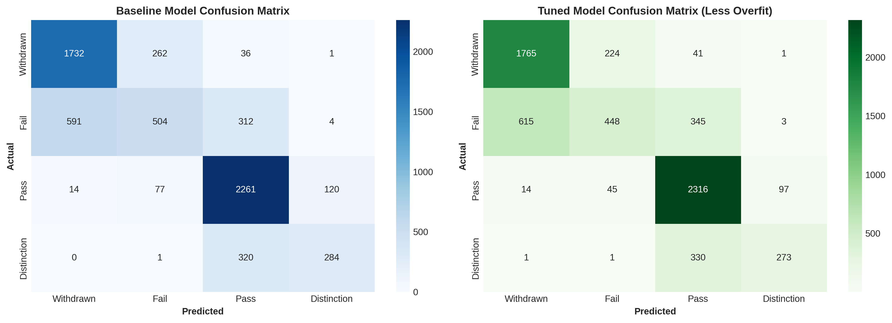
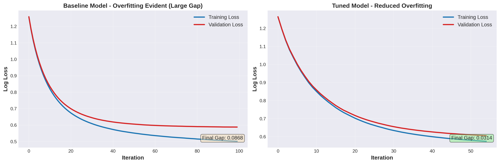

StudentPulse — Academic Risk Navigator
An end-to-end four-class prediction pipeline that turns course, assessment and VLE engagement data into early academic-risk signals.
Problem
How can course, assessment, and engagement records help identify students at risk of withdrawal or failure?
Contribution
Joined seven source datasets, engineered behavioural features, tuned an XGBoost classifier, and analysed held-out and per-class performance.
Result
The recorded evaluation reports 73.66% accuracy on 6,519 held-out records, with the train–test gap reduced from 4.90% to 1.01%. This is an offline evaluation, not evidence of improved student outcomes.
Design takeaway
Overall accuracy can hide class-specific errors. Inspecting withdrawal and failure separately gives a clearer account of model performance and its limitations.
The model is designed around intervention value, not only overall accuracy. Seven raw datasets are joined into a single student-level modelling table, behavioural and assessment features are engineered, and the held-out evaluation reports each academic outcome separately so withdrawal detection cannot be hidden by majority-class performance.
Evidence of quality
How the system is structured


Engineering depth
- Held-out evaluation: test records are kept separate from model fitting and the page reports the test result rather than a training score.
- Generalisation is measured directly: the project tracks the train–test gap and tunes specifically to reduce overfitting, not merely to maximise an in-sample metric.
- Class-level reporting: withdrawal, failure, pass and distinction outcomes are inspected separately through a confusion matrix and classification report.
- Feature engineering is explicit: behavioural signals are built from raw interaction data rather than assuming the original tables are already model-ready.
- Reproducible artefacts: processed splits, fitted-model metadata and visual diagnostics are stored in named project folders and the notebook can be executed from the documented environment.
Integrated technologies
The project is intentionally shown as a system, not just a language label. These are the technologies that materially participate in the implementation.
 XGBoost
XGBoostExplore the implementation
Repository links are kept close to the case study so a reviewer can move directly from the architectural claim to the source.